夜市與飲食文化
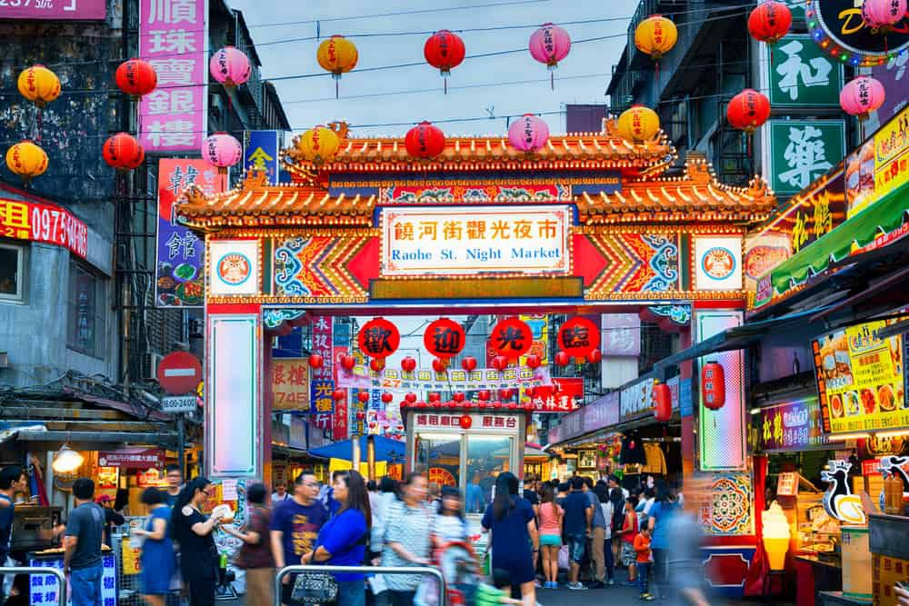
台北是一座美食文化豐富的城市，從傳統小吃到特色餐廳，都能展現出獨特的在地風味。其中，夜市更是台北最具代表性的美食文化之一。 例如，饒河街觀光夜市以香氣四溢的胡椒餅聞名，外皮酥脆、內餡多汁；寧夏夜市則聚集了蚵仔煎、滷肉飯、芋頭丸等經典台灣小吃； 而永康街則以牛肉麵、特色甜點及各式異國料理吸引許多遊客。此外，台北的傳統市場也藏著許多充滿人情味的美食。 無論是熱鬧的夜市，還是巷弄裡的小吃店，都能讓人感受到台北多元而迷人的飲食文化。
漫遊在古色古香的老街道與現代摩天大樓交織的城市
台北早期是平埔族凱達格蘭族的生活領域，當時族人主要以漁獵、農耕及河川活動維生。清朝時期，隨著漢人移民逐漸進入台北盆地，城市開始發展。 1709年，陳賴章墾號向官府申請開墾，帶動台北地區的土地開發與聚落形成。其中，位於淡水河畔的艋舺（今萬華）因水運交通便利，逐漸發展成為重要的商業與貿易中心， 並有「一府二鹿三艋舺」的美譽。後來，大稻埕也因茶葉貿易興盛而迅速繁榮，尤其烏龍茶出口帶動了茶行與外國商人的進駐，使台北逐漸成為台灣北部重要的經濟重鎮。
1884年，清朝完成台北城的興建，並設置五座城門，奠定了台北近代城市發展的基礎。進入日治時期後，台北開始進行現代化都市規劃，包括道路拓寬、 鐵路建設及公共設施的改善，也留下許多具有歷史價值的建築，例如總統府（原臺灣總督府）與西門紅樓。這些建設使台北逐漸從傳統的商業聚落轉變為現代化都市。 戰後，隨著政府遷台、經濟發展及科技產業興起，台北的城市規模持續擴大，逐漸發展成為今日台灣重要的政治、經濟、文化與科技中心。
台北是一座融合傳統與現代、多元與創新的城市。這裡既有快速便利的捷運交通、繁華熱鬧的商業街區，也保留著充滿歷史韻味的老街、傳統市場與溫暖的人情味。 從廟宇文化、在地小吃到文創藝術與國際潮流，展現出豐富多樣的城市風貌。台北不僅是台灣重要的政治與經濟中心，更是一座兼具現代活力與人文溫度的文化城市。

台北是一座美食文化豐富的城市，從傳統小吃到特色餐廳，都能展現出獨特的在地風味。其中，夜市更是台北最具代表性的美食文化之一。 例如，饒河街觀光夜市以香氣四溢的胡椒餅聞名，外皮酥脆、內餡多汁；寧夏夜市則聚集了蚵仔煎、滷肉飯、芋頭丸等經典台灣小吃； 而永康街則以牛肉麵、特色甜點及各式異國料理吸引許多遊客。此外，台北的傳統市場也藏著許多充滿人情味的美食。 無論是熱鬧的夜市，還是巷弄裡的小吃店，都能讓人感受到台北多元而迷人的飲食文化。
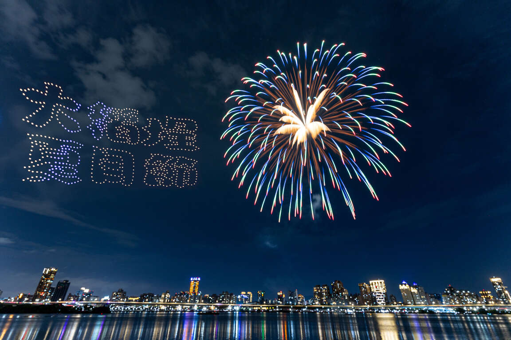
台北擁有豐富的宗教信仰與傳統文化，其中廟宇是重要的文化特色之一。位於萬華的艋舺龍山寺建於清朝時期，是台北歷史悠久的信仰中心， 以精緻的建築雕刻與濃厚的宗教氛圍聞名；大稻埕霞海城隍廟則以月老聞名，吸引許多民眾前來祈求好姻緣；而位於松山的慈祐宮也是當地重要的信仰據點。 此外，台北每年舉辦的大稻埕夏日煙火節，結合音樂表演、特色市集與河岸煙火，吸引許多民眾與遊客參與。這些廟宇與文化活動不僅展現台北深厚的歷史底蘊，也讓傳統文化在現代城市生活中持續傳承。
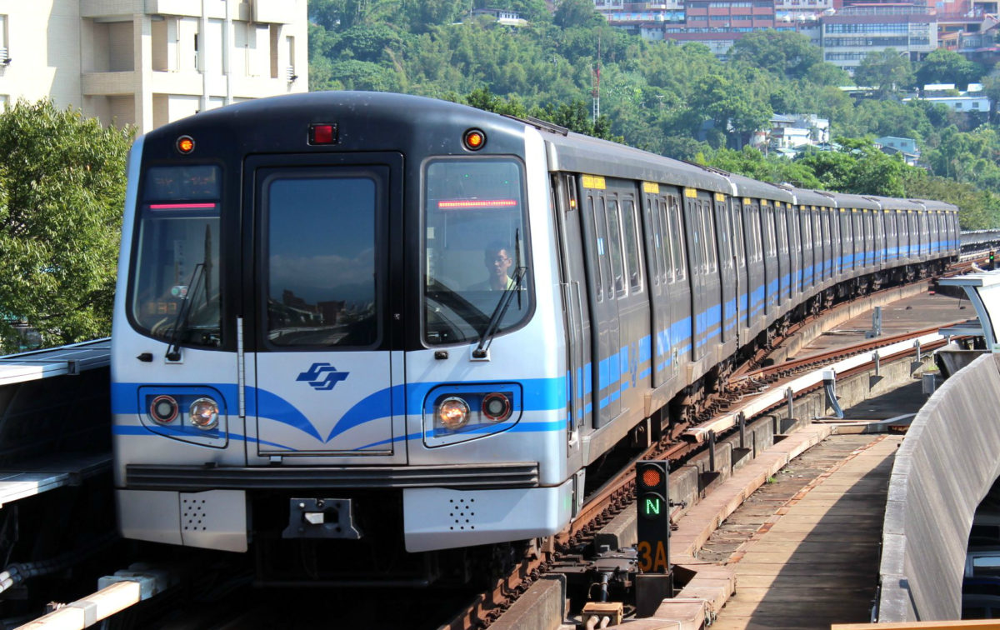
台北的城市生活結合了便利的交通與豐富的藝文氣息，其中捷運文化是最具代表性的特色之一。台北捷運不僅路線完善、交通便利，車站內也有許多共同遵守的生活禮儀， 例如進站後禁止飲食、排隊候車及車廂內保持安靜，展現出台北人重視秩序的生活習慣。此外，台北也有許多特色地下街，提供購物、美食與休閒空間， 像是台北車站地下街充滿著許多販賣二次元文化與電動的店讓喜歡的人可以逛；此外，台北車站地下街也有許多東南亞餐廳，讓來台的東南亞人們有地方可以相聚並吃到家鄉的美食。
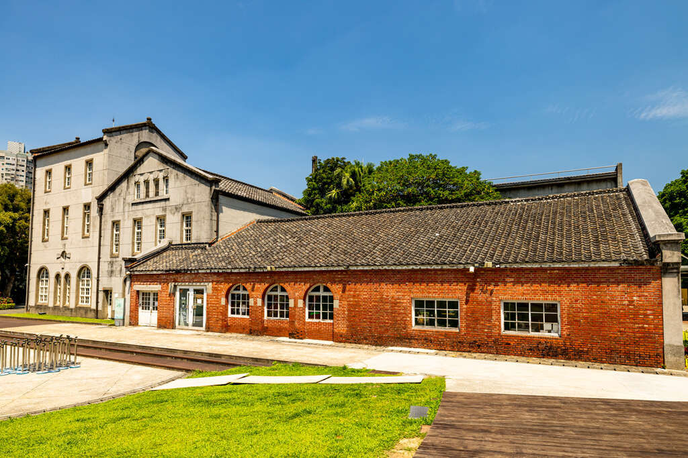
台北除了繁華熱鬧的都市景象，也有許多充滿特色的巷弄文創空間。走進赤峰街、青田街或大稻埕，可以發現許多由老屋改建的特色咖啡廳、獨立書店與文創小店， 散發著懷舊又文藝的氣息。此外，華山1914文化創意產業園區與松山文創園區經常舉辦展覽、市集及藝術活動，讓人們在忙碌的都市生活中，也能放慢腳步，感受藝術與創意的魅力。
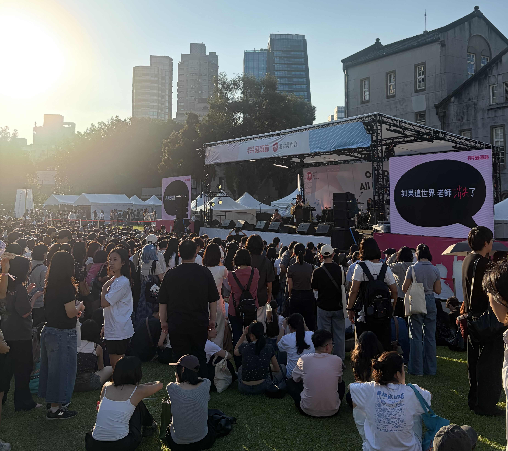
台北擁有豐富且多元的音樂文化，每到週末，The Wall、Legacy 等 Live House 或戶外空間經常舉辦各式樂團演出，吸引許多喜愛音樂的年輕人前往欣賞。 此外，市區的展演空間與近郊舉辦的音樂祭，也讓不同風格的音樂創作者有展現才華的舞台。從獨立樂團到流行音樂，台北展現出充滿活力與包容力的音樂氛圍。
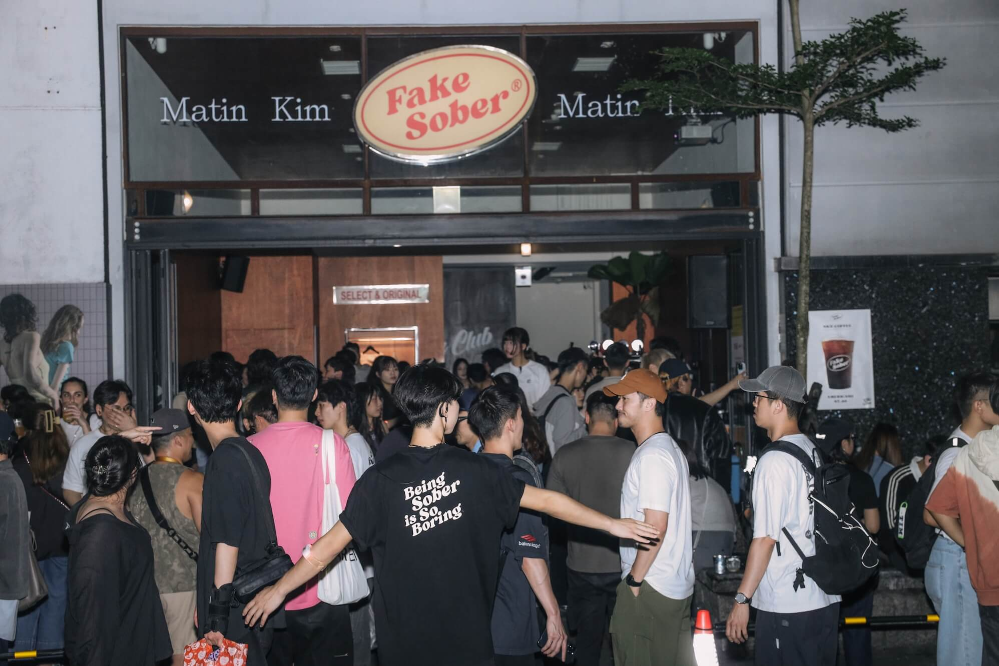
台北的夜生活豐富又便利，從24小時營業的誠品書店、隨處可見且提供多種服務的便利商店，到深夜依然熱鬧的 KTV、酒吧與清粥小菜店，都能滿足不同人的需求。 無論是晚上想找地方讀書、和朋友聚會，還是享用宵夜，台北總有適合的去處，展現出這座城市便利、多元且充滿活力的一面。

台北101是台灣著名的地標，曾是世界最高摩天大樓。大樓內設有重達數百噸的巨型阻尼器，可降低強風與地震造成的晃動。 每年跨年煙火更吸引無數民眾欣賞，成為台北最具代表性的城市景象。
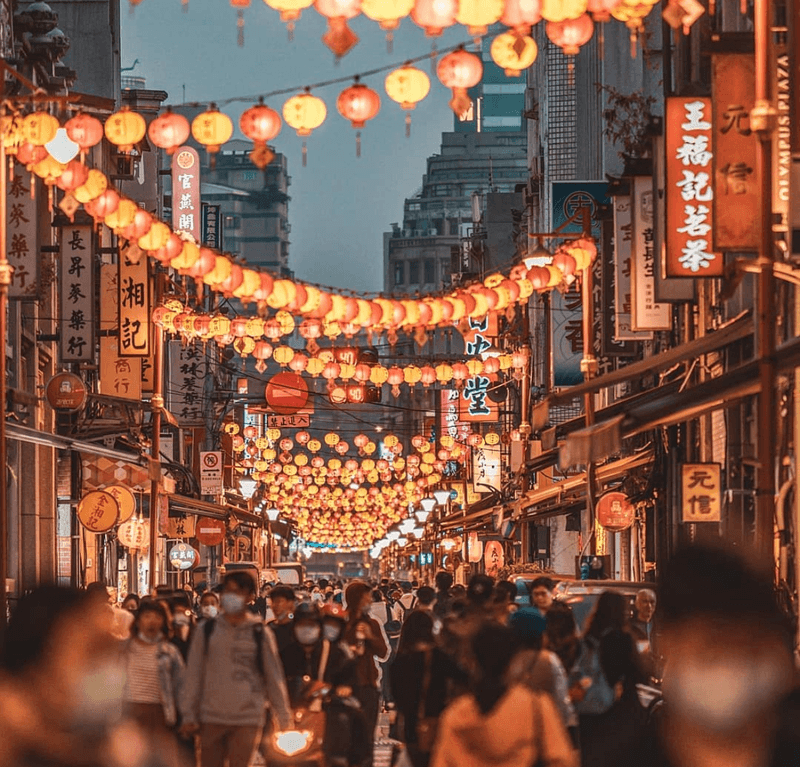
大稻埕以巴洛克式立面老建築聞名，充滿懷舊風情。每逢農曆新年，迪化街年貨大街總是熱鬧非凡，聚集各式年節商品。 漫步淡水河畔，還能欣賞美麗夕陽，感受古今交融的城市魅力。

艋舺龍山寺是台北歷史悠久的宗教古蹟，建於清朝時期，以精緻的雕刻與傳統建築聞名。 寺廟香火鼎盛，是當地重要的信仰中心，也展現了台北深厚的歷史與傳統文化。
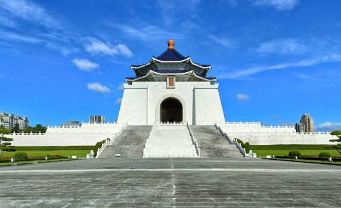
中正紀念堂是台北著名的歷史文化地標，以宏偉的中國宮殿式建築聞名。 園區內有自由廣場、民主大道及美麗庭園，除了能欣賞建築之美，也是民眾休閒與認識台灣歷史的重要場所。
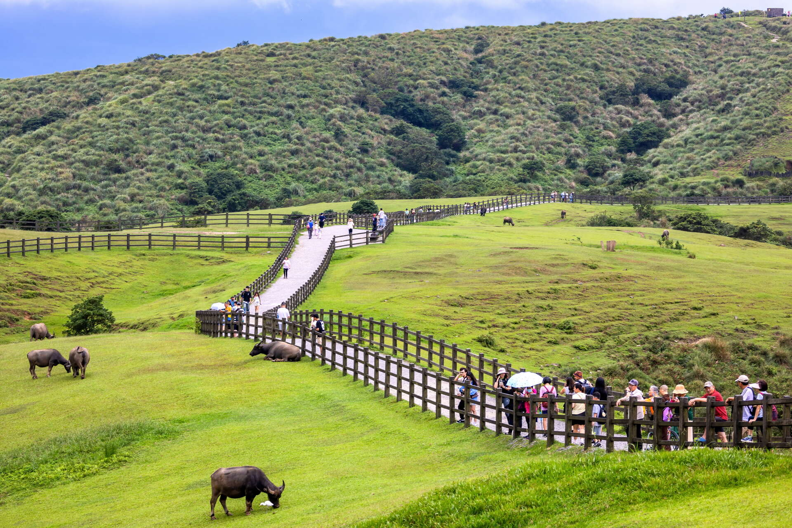
陽明山是台北著名的後花園，擁有壯麗山景、火山地形、竹子湖花海與豐富的自然生態。 春季可賞花，秋冬能泡溫泉，還有擎天崗草原等景點，是親近自然、放鬆身心的好去處。
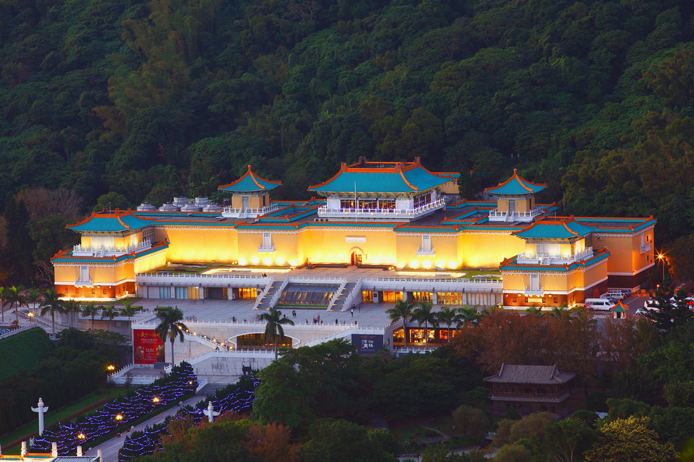
國立故宮博物院收藏豐富的中華文化藝術珍品，包含書畫、陶瓷、玉器與歷史文物， 其中翠玉白菜與肉形石最具代表性。透過各式展覽，讓民眾認識歷史文化，感受藝術之美。
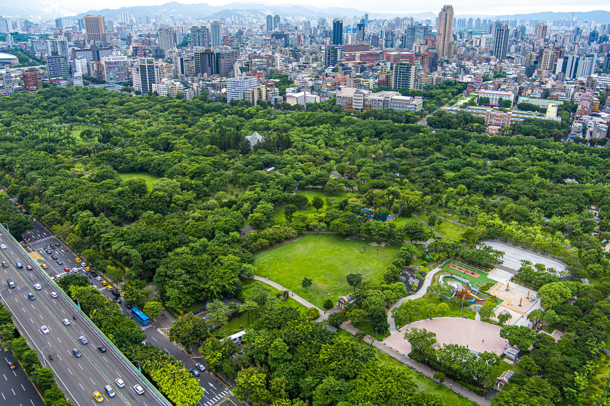
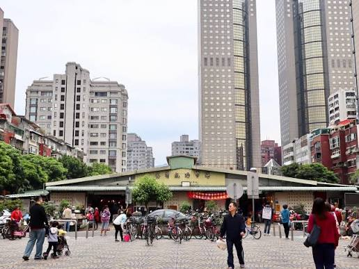
大安森林公園對我來說，不只是一座都市裡的綠地，更像是一位陪伴我長大的老朋友。還記得小時候只要有空就會和家人到公園走走，有時在寬闊的步道上奔跑、 騎腳踏車，有時則是在草地上玩耍、休息。看著陽光穿過樹葉灑落在地面上，總讓人覺得很舒服、很放鬆。公園裡有許多樹木、花草和小動物， 每次去都有不同的感受。即使台北市區總是車水馬龍，生活步調也很快，但只要走進大安森林公園，就好像能暫時遠離城市的喧鬧，享受一段悠閒的時光。 對我而言，這裡不只是小時候玩耍的地方，也收藏了許多和家人相處的回憶，是我童年生活中很重要的一部分。
而距離不遠的成功市場，則是另一個充滿熱鬧氣氛的地方，也是我小時候很熟悉的日常風景。以前常常跟著奶奶一起去市場買菜，市場裡總是有許多攤販， 大家熱情地招呼客人，耳邊充滿此起彼落的叫賣聲，空氣中也混合著各種蔬果和食物的味道。奶奶會仔細挑選新鮮的食材，有時也會和熟悉的攤販聊天， 讓我感受到傳統市場濃濃的人情味。逛完市場回家後，奶奶還會用買回來的食材做出我最喜歡吃的炒飯，雖然這只是一道簡單的家常料理，卻是我記憶中最熟悉、 最溫暖的味道。現在回想起來，和奶奶逛市場、回家吃飯這些平凡的小事，都成為我非常珍貴的回憶。大安森林公園的悠閒與成功市場的熱鬧， 構成了我對大安區最深刻的印象，也讓我看見了台北除了繁華與便利之外，還有許多充滿人情味、值得慢慢回味的生活點滴。
童年時期有奶奶的蛋炒飯與傳統市場的人情味作伴，而隨著年紀增長，我的生活圈也逐漸擴大。考上西松高中後，我開始過著每天搭捷運上下學的日子。 雖然大眾運輸非常方便，但尖峰時刻擠在滿滿人潮的車廂裡，有時真的挺耗體力。從牽著家人逛市場，到高中獨自擠捷運通勤，這些再平凡不過的生活片段， 如今都成了我最捨不得的青春回憶。
上了大學來到海洋大學，生活圈變成基隆跟台北兩地跑。雖然兩地真的超近，搭 1579 客運一個小時內就能到，但在基隆求學、離開家裡之後， 我對家鄉的感覺反而有了不太一樣的體會。以前在台北生活時，常覺得這裡人擠人、步調快得讓人喘不過氣；但真的到外地生活後， 卻意外發現自己其實很想念台北便利的交通、熟悉的街景，還有跟家人相處的時光。每次回到家，經過熟悉的公園和市場，心裡總會湧上一陣暖意。 這才發現，台北不只是個生活機能方便的地方，更是裝滿了我所有成長回憶和情感歸屬的所在。